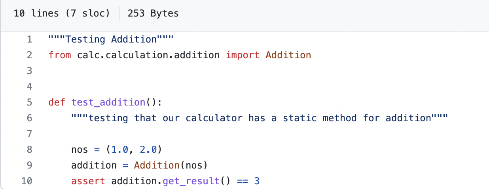

Unit testing is a software testing method by which individual units of source code are put under various tests to determine whether they are fit for use (Source). It determines and ascertains the quality of your code. Test Runner is a library or a testing tool which reads the source code that contains unit tests and a bunch of settings which can be executed and produces its output to the console or log files. There are different Test Runners available in Python. Pylint is the popular Test Runner used by beginners. Things can quickly spiral out of control for individuals who are just getting started with automated testing. It's like a bottomless hole of acronyms, abbreviations, and long, difficult words. The AAA pattern is a test structure pattern. The “Arrange-Act-Assert” (also AAA and 3A) pattern of testing was observed and named by Bill Wake in 2001.
Importance of AAA : It helps by unifying and clarifying the structure of tests which helps make the test suite much more understandable and manageable. It divides each test into three sections: Arrange, Act, and Assert, each of which is a step toward the next. The Arrange phase puts up the input values for the test. The principal function being tested is prompted by the act step. Finally, the assert step ensures that the function's output matches what was expected. The pattern focuses each test on a single action. The advantage of this focus is that it clearly separates the arrangement of the System Under Test (SUT) and the assertions that are made on it after the action. To put it another way, each step in the pattern is a function whose return value is the next step's input.
Eg:
assert Calculator.add_number(1, 2) == 3
Here we are checking whether the output of the method add_number of the Calculator class is 3, when we provide
inputs as 1 & 2. In this example inputs are arranged as in Arrange block and code that sets up the conditions
for the test action to get result is framed using calling the method of Calculator class as in Act block. At
the end assert is used to verify the result.
Following is a complete example of a particular AAA testing method:
def test_calculator_multiply(setup_cleanup_fixture):
""" tests multiplication of two numbers"""
# pylint: disable=unused-argument,redefined-outer-name
assert Calculator.multiply_numbers(1, 2) == 2
In testing, a fixture provides a defined, reliable and consistent context for the tests. This could include
environment (for example a database configured with known parameters) or content (such as a dataset).
@pytest.fixture
def setup_cleanup_fixture():
"""cleanup fixture"""
History.clear_history()
This fixture is used to clear the memory of historical calculations done before. @pytest.fixture is the annotation used for creating fixtures. Then we can provide the steps which we need to use redundantly in the following tests. Overall, the AAA pattern is just intended to be used as a guideline. It's a framework, or a technique of thinking about and organizing your tests such that they're easy to comprehend. There is no documentation included in any package or downloaded tool. Instead, it leaves it up to you, the author, to decide how to best produce and use it.
Testing with external data using pandas
Data-driven testing is a framework in which test data is stored in an external location and kept separate
from functional tests. Instead of using the same hard-coded values each time the test runs, in data-driven
testing, test data and output values are read from files that can be stored in single or multiple data sources
such as comma-separated values (CSV) files, Excel sheets, XML, and databases. This allows automation engineers
to have a single test script that can run tests for all the test data.
Data-driven tests run the same test logic and assertions, but they fetch different input data each time which
increases the speed and productivity.
Pandas is a fast, powerful, flexible and easy to use open source data analysis and manipulation tool,
built on top of the Python programming language. It is free software released under the three-clause BSD license.
Pandas is mainly used for data analysis. Pandas allows importing data from various file formats such as
comma-separated values, JSON, SQL, and Microsoft Excel. Pandas allows various data manipulation operations
such as merging, reshaping, selecting, as well as data cleaning, and data wrangling features.
A simple way to store big data sets is to use CSV files (comma separated files). CSV files contains plain text
and is a well know format that can be read by everyone including Pandas. We can import and use pandas as follows
for external data.
import pandas as pd
df.to_csv("foo.csv") // Write to csv file
pd.read_csv("foo.csv") // Reading from csv files
df.to_excel("foo.xlsx", sheet_name="Sheet1") // Write to excel files
pd.read_excel("foo.xlsx", "Sheet1", index_col=None, na_values=["NA"]) //Read from excel files
Using pandas we can test external data in any format as above which are present in csv, Excel files or HDF5 Store. On
reading CSV files Pandas will only return the first 5 rows, and the last 5 rows, so we can use max_rows to return
system's maximum rows with the pd.options.display.max_rows statement. One of the most used method for getting a
quick overview of the DataFrame, is the head() method.
The head() method returns the headers and a specified number of rows, starting from the top. There is also a
tail() method for viewing the last rows of the DataFrame.
The tail() method returns the headers and a specified number of rows, starting from the bottom.